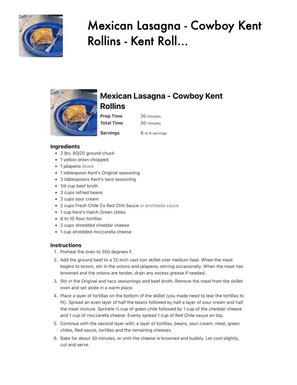

Mexican Lasagna - Cowboy Kent

Original cookbook page 557
Ingredients
- * 2 bs. 80/20 ground chuck
- 1yellow onion chopped
- 1jalapeno diced
- * 1 tablespoon Kent's Original seasoning
- 3 tablespoons Kent's taco seasoning
- 1/4 cup beef broth
- * 3 cups refried beans
- * 2cups sour cream
- * 2cups Fresh Chile Co Red Chili Sauce or enchilada sauce
- * 1 cup Kent's Hatch Green chiles
- * 8 to 10 flour tortillas
- * 2 cups shredded cheddar cheese
- * 1cup shredded mozzarella cheese
Instructions
- Preheat the oven to 350 degrees F.
- Add the ground beef to a 12-inch cast iron skillet over medium heat. When t' begins to brown, stir in the onions and jalapeno, stirring occasionally. When browned and the onions are tender, drain any excess grease if needed.
- Stir in the Original and taco seasonings and beef broth. Remove the meat fr oven and set aside in a warm place.
- Place a layer of tortillas on the bottom of the skillet (you made need to tear t fit). Spread an even layer of half the beans followed by half a layer of sour cr the meat mixture. Sprinkle % cup of green chile followed by 1 cup of the che and 1 cup of mozzarella cheese. Evenly spread 1 cup of Red Chile sauce on |
- Continue with the second layer with: a layer of tortillas, beans, sour cream, r chiles, Red sauce, tortillas and the remaining cheeses.
- Bake for about 30 minutes, or until the cheese is browned and bubbly. Let c cut and serve.
Recipe #557 from collection